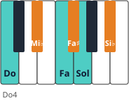

Módulo 12: Improvisación: blues y reharmonización
Crear música propia con lo que ya sabes.
Improvisar es conversar con notas: frases cortas, silencios, preguntas y respuestas. Con tres notas bien elegidas ya se puede hacer música.
El blues de 12 compases
Es la forma más usada para aprender a improvisar: corta, repetitiva y con tres acordes.
| Compases | 1–4 | 5–6 | 7–8 | 9 | 10 | 11 | 12 |
|---|---|---|---|---|---|---|---|
| Acordes en Do | C7 | F7 | C7 | G7 | F7 | C7 | G7 (vuelta) |
| Grados | I7 | IV7 | I7 | V7 | IV7 | I7 | V7 |
🎼 Blues de 12 compases en Do (boogie)
Mano derecha: 3.ª y 7.ª de cada acorde (shell voicing). Mano izquierda: patrón boogie fundamental–5.ª–6.ª–7.ª.
1. La escala de blues

- Toca el bajo boogie con la mano izquierda hasta que sea automático.💡 Cómo se hace: repítelo siguiendo los 12 compases de la partitura (Do7 cuatro compases, Fa7 dos, Do7 dos, Sol7, Fa7, Do7, Sol7) hasta que puedas contarlos en voz alta mientras tocas.
- Con la derecha, improvisa frases cortas de 2 compases usando solo 3 notas de la escala.💡 Cómo se hace: elige Do, Mi♭ y Fa. Inventa un ritmo sencillo (por ejemplo, cuatro corcheas y una negra) y repítelo cambiando el orden de las notas. Un ritmo repetido da unidad; las notas aportan la variedad.
- Deja silencios: pregunta (2 compases) y respuesta (2 compases).💡 Cómo se hace: la pregunta termina en una nota que suena «abierta» (Fa o Mi♭); la respuesta repite el ritmo de la pregunta y termina en Do, la nota de «casa». Como en una conversación: «¿Vienes?» — «Sí, ya voy».
- Amplía a toda la escala y añade la «nota azul» Mi♭ resolviendo a Mi.💡 Cómo se hace: añade Fa♯, Sol y Si♭ poco a poco, una nota nueva cada día. Para la nota azul, toca Mi♭ y pasa enseguida al Mi (con los dedos 2-3), como un pequeño adorno sobre el acorde de Do7.
2. Reharmonizar
Reharmonizar es cambiar los acordes de una melodía conservándola. Recursos sencillos:
- 🔄 Sustituir I por vi o iii (comparten dos notas).
- 🔄 Preparar cualquier acorde con su propio dominante (dominante secundario): antes de Dm, toca A7.
- 🔄 Convertir V en ii–V (G7 → Dm7–G7).
- 🔄 Sustitución tritonal: G7 → D♭7 (comparten la 3.ª y la 7.ª).
Una frase de ejemplo
Escucha esta frase hecha solo con la escala de blues. Fíjate en cómo los dos primeros compases «preguntan» y los dos siguientes «responden», y en la nota azul (Mi♭) que se desliza al Mi.
🎼 Frase de blues: pregunta y respuesta
Solo con la escala de blues: dos compases que «preguntan», dos que «responden» y la nota azul (Mi♭) que resuelve en Mi.
Cinco reglas para empezar a improvisar
- 🎵 Pocas notas: empieza con tres (Do, Mi♭, Fa). Las limitaciones liberan.
- 🎵 Ritmo antes que notas: una nota repetida con buen ritmo ya suena a blues.
- 🎵 Repite tus ideas: tocar una frase dos veces y cambiar el final suena intencionado.
- 🎵 Deja silencios: si tocas sin parar, nadie entiende la «conversación».
- 🎵 Termina en una nota del acorde: Do, Mi o Sol sobre Do7 suenan a «punto final».
🗓️ 10 minutos de improvisación al día
- 2 min · Bajo boogie solo con la izquierda hasta que vaya en automático.
- 3 min · Derecha con 3 notas: frases de 2 compases y 2 compases de silencio.
- 3 min · Toda la escala de blues; pregunta y respuesta.
- 2 min · Grábate y escucha: ¿qué frase repetirías?
⚠️ Errores frecuentes y cómo corregirlos
| Lo que pasa | Por qué | Cómo corregirlo |
|---|---|---|
| Me bloqueo y no sé qué tocar | Demasiadas opciones | Limítate a tres notas y juega solo con el ritmo |
| Suena a escala subiendo y bajando | Toco las notas en orden | Salta entre notas, repite y deja silencios |
| Pierdo el sitio en los 12 compases | Me concentro solo en la derecha | Cuenta los compases en voz alta o piensa en los acordes mientras tocas |
🧩 ¿Qué notas forman la escala de blues de Do?
🧩 ¿Qué acorde suena en el compás 5 del blues en Do?
🎹 Tu primer coro de blues
Graba con el móvil un coro (12 compases) de blues improvisado y escribe qué frase te ha gustado más.